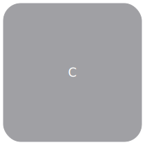

This is a listing of the available documentation of the Modelica Standard Library and its related libraries.
| Name | Description | Version |
|---|---|---|
|  Complex | Complex number with overloaded operators | 3.2.1 |
| Modelica Standard Library - Version 3.2.1 (Build 2) | 3.2.1 | |
| Modelica Reference | 3.2.1 | |
| ModelicaServices (Default implementation) - Models and functions used in the Modelica Standard Library requiring a tool specific implementation | 3.2.1 | |
| Library that contains components from Modelica Standard Library 2.2.2 that have been removed from version 3.0 |